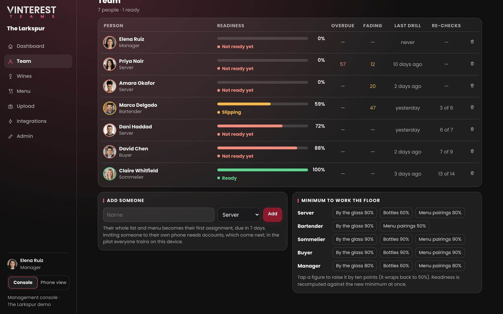

Upload the list and the menu. Vinterest writes a card for each bottle, drills each person five questions a day, and tells you who's ready before service.
In pilot with restaurants now. Readiness comes only from drills, never from sales.


Photos or a PDF of the wine list and the menu. The review says what's new, what's gone and what changed: a new vintage, a new price, by the glass now. Publish writes the training.


What to say to a guest, in plain words. What it tastes like, with body, acidity, tannin and sweetness each explained. Grape and place, how to serve it, which dishes on this menu, and what to offer instead from this list.


Each wine has four rungs: recognise it, recall it, apply it at a table, tell it from the most similar wine on the list. Each question comes back on its own schedule, sooner after a confident wrong answer, later as it holds.

Readiness per person against the minimum for their role: a server needs 80% of the glass list, a sommelier 90% of everything. Who's overdue, who's slipping, which new wines nobody knows yet, and which by-the-glass wines too few people can sell.

Import a night's sales from any till as a CSV. The console shows what sells, who sells it, the slow movers by the glass with the card's line to say, and whether a trained server sells more of a wine than one who isn't. The Square connector comes next.

Servers, bartenders and the sommelier on one list and one menu, each held to their own minimum. Pairings written for your dishes, not generic ones.
For restaurants →Your range is the list; the tasting flight is the menu. Seasonal staff can talk about every wine on the bench in their first week.
For wineries →Accounts for restaurants come next: each person on their own phone, each site's list, the manager's dashboard on the web. Until then, one restaurant trains on one device.
What's next →Send a photo of your wine list and we'll show you the cards, the drill and the console built from it, with your dishes paired.